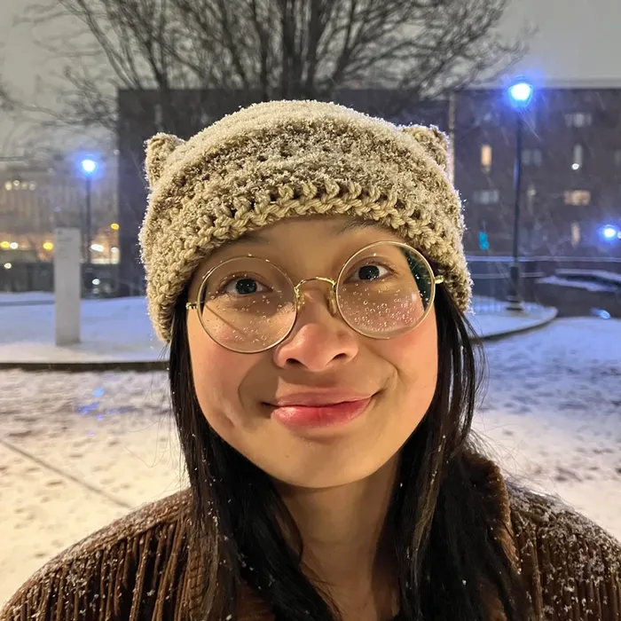

I'm Kanya,
I'm Kanya,
nice to meet you!
I'm a Philadelphia-based undergraduate student studying User Experience and Interaction Design (UXID) at Drexel University.
I'm also currently working as a Web Content Editor for Drexel's Office of the Provost! 💻
I'm seeking to expand my knowledge on product design, graphic design, user research methodologies, and frontend development. Through my work, I hope to bridge the gap between aesthetic sensibilities and more accessible, user-friendly digital interfaces! 🌿
Aside from my design and dev work, I love to crochet 🧶, do puzzles 🧩, explore the city with friends 🌆, and play the flute 🪈!